Rodrigo Morelli — 450 composições, 800 banjos regulados e três décadas de roda.
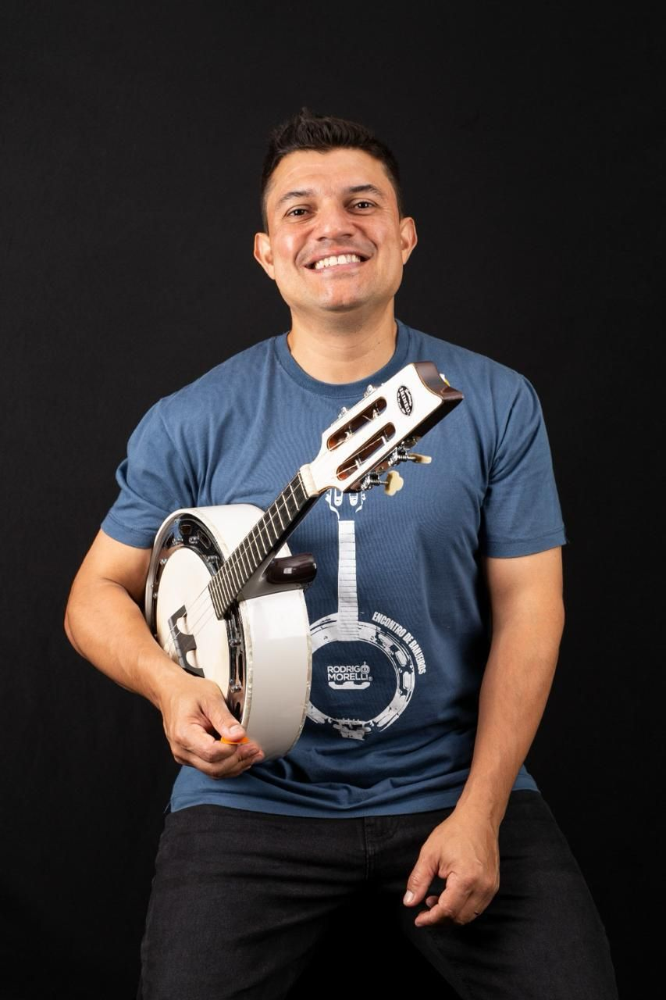
Não existe curso de banjo para samba feito por quem realmente vive do instrumento. Este existe. Do zero absoluto ao nível de roda profissional, com quem regulou 800 banjos e dividiu palco com Beth Carvalho.
Banjos assinados, regulados e testados por Rodrigo antes de sair. Cada instrumento sai da loja pronto para tocar — não é caixa de fábrica, é instrumento preparado.
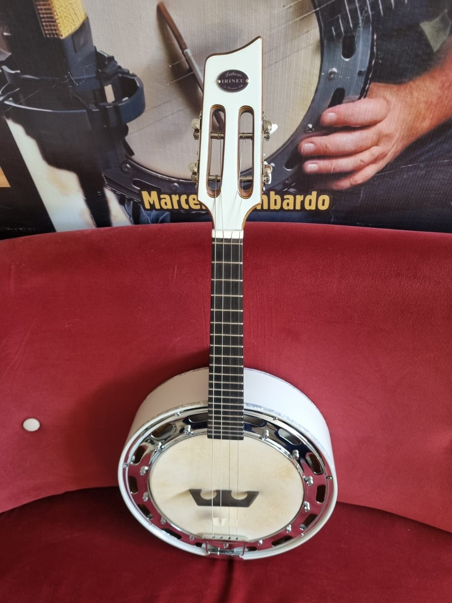
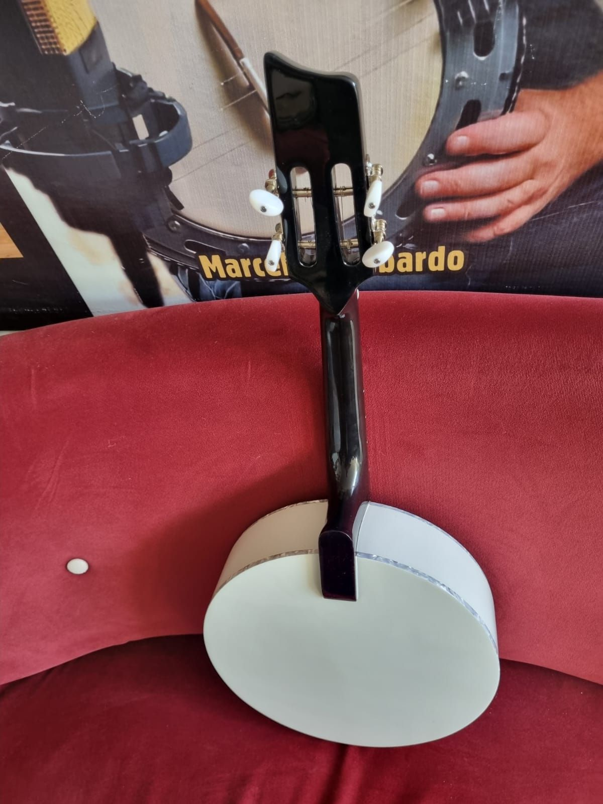
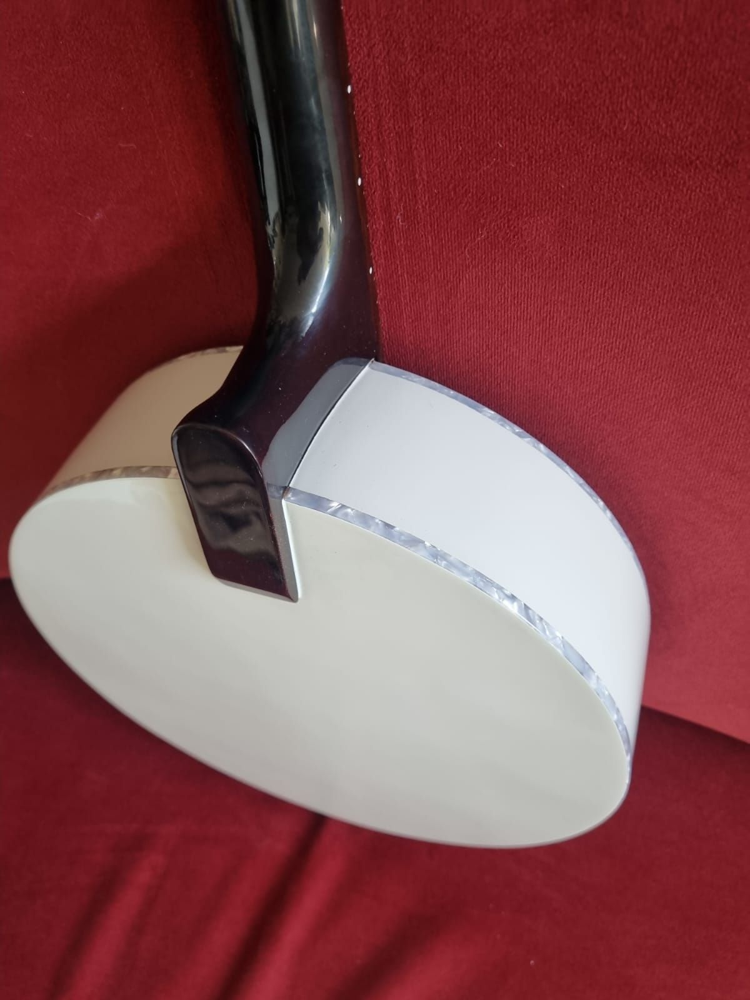
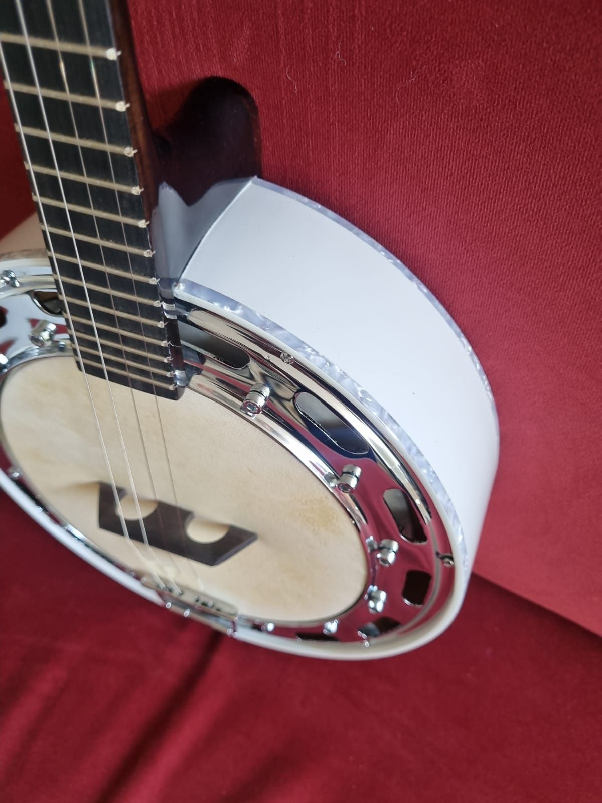
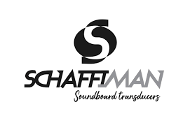
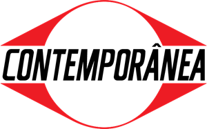
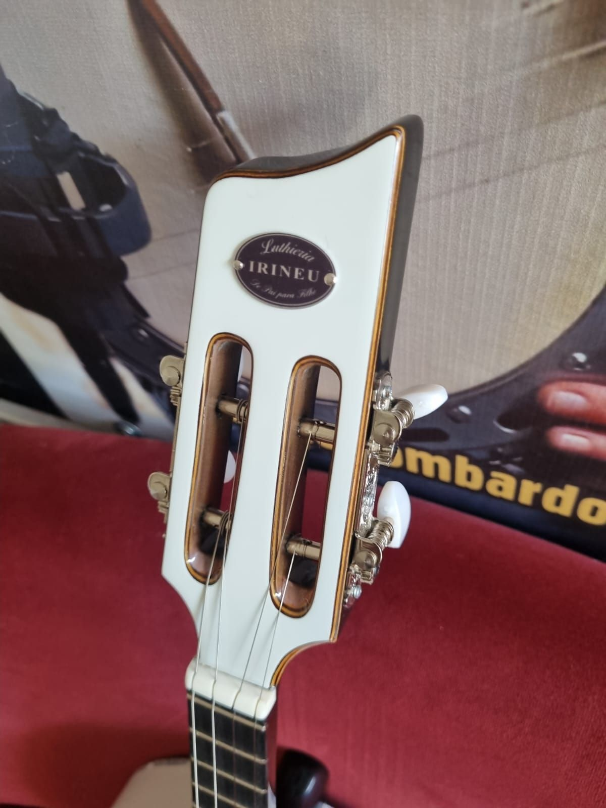
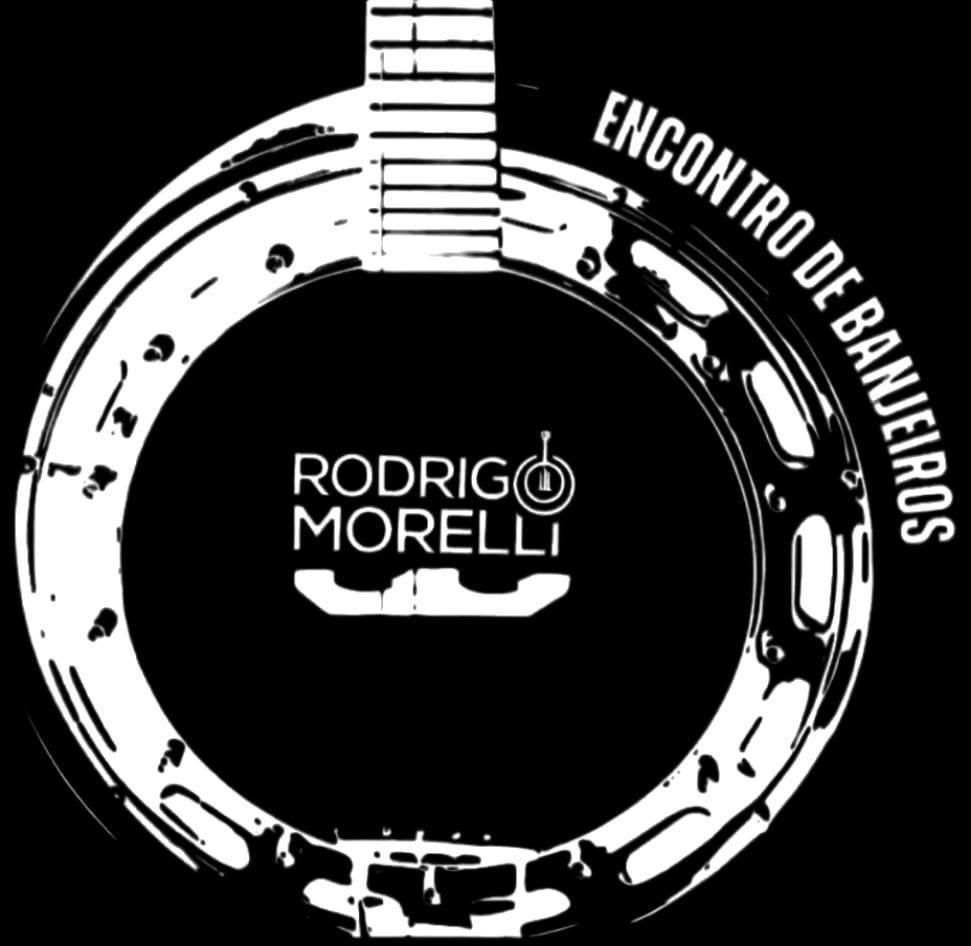
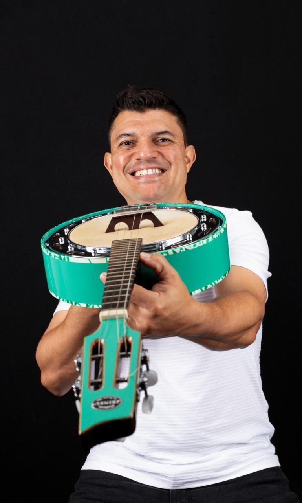
Rodrigo Morelli começou onde o samba paulista sempre começou: na roda. Início dos anos 1990, ao lado do pai e do avô, aprendendo por observação o que nenhuma escola ensina — o tempo, a levada, o silêncio certo.
O que era herança familiar virou ofício, e o ofício virou assinatura. No banjo, desenvolveu uma sonoridade que músicos reconhecem antes de saber quem está tocando. Jornalista formado pela Universidade São Marcos, é autor de O Samba Paulista Como Realmente É — livro que rendeu uma entrevista de uma hora com Arlindo Cruz.
Rodrigo não só toca banjo. Ele regula, desenvolve e assina o instrumento.
Referência técnica nacional em regulagem e preparação: altura de ação, tensão de pele, timbre, captação e ajuste de braço. O mesmo trabalho feito nos instrumentos que sobem ao palco com ele.
Agendar regulagemDesenvolvido com a Luthieria Irineu a partir de especificações próprias, com identidade sonora alinhada ao estilo de execução de Rodrigo. Produção limitada.
Ver na lojaIdealizado por Rodrigo, o Encontro reúne banjeiros de todos os níveis técnicos na mesma roda — do iniciante ao profissional. O objetivo é popularizar um instrumento historicamente restrito e abrir espaço para novos talentos nas casas onde Rodrigo se apresenta.
Sete discos, mais de 450 composições e obras gravadas por Bira Hawaii, Délcio Luiz, Milton Manhães e Chiquinho dos Santos.
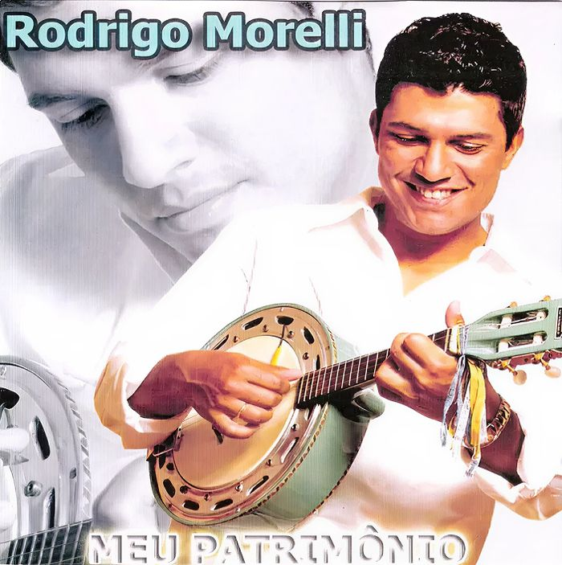
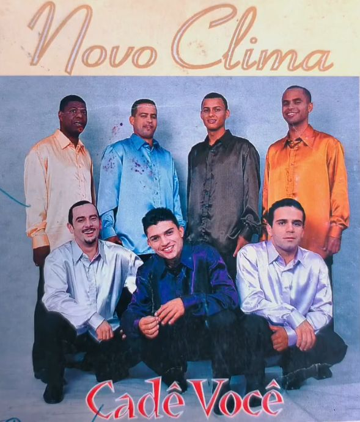
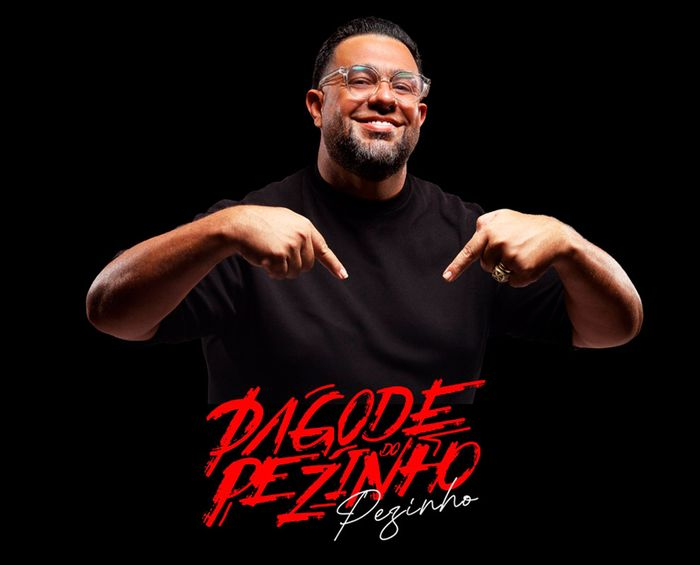
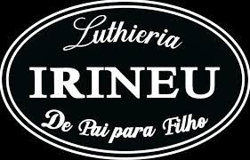